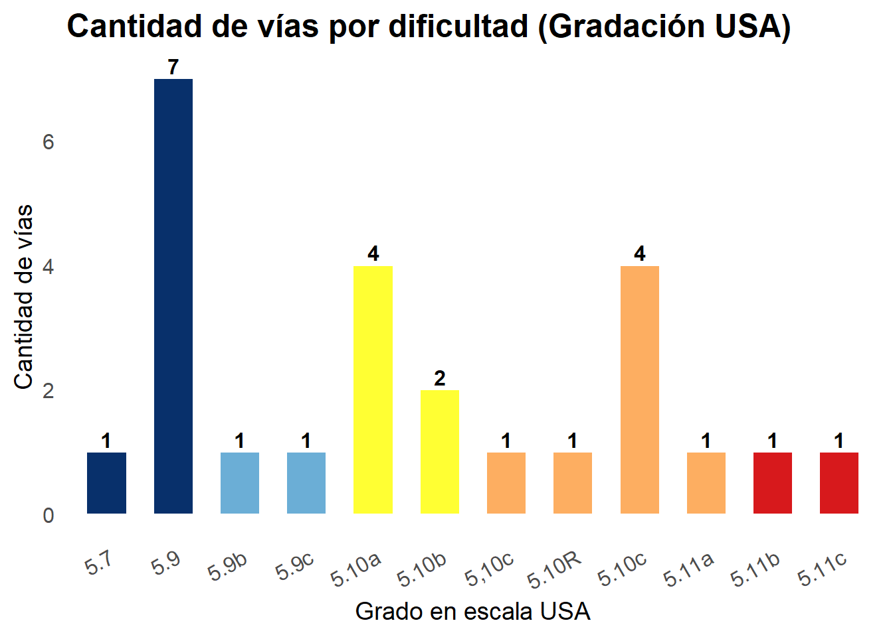

Guía Interactiva
🧗 Guía de Escalada Deportiva en Paraguay
Explorá las vías de escalada deportiva en Paraguay a través del mapa interactivo, una tabla filtrable y gráficos dinámicos.
🔁 Cargar shapefile, crear mapa, tabla y exportar CSV (R)
📊 Tabla Filtrable de Vías (R)

Club de Escalada Asunción - Guía Interactiva Club de Escalada Asunción - Guía Interactiva Club de Escalada Asunción - Guía Interactiva Club de Escalada Asunción